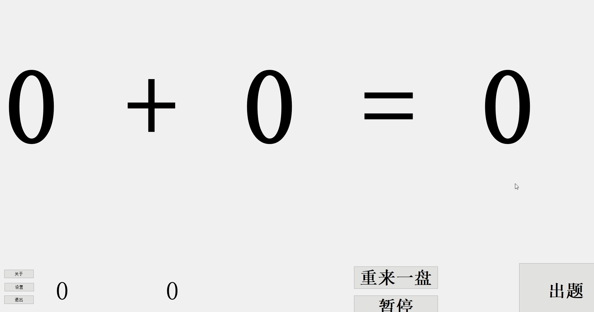

小学数学计算小能手是一款专门针对小学生的数学计算工具，它界面简洁大方，操作简单，
让学生能够集中精力在计算上面。能够有效地提高小学生的计算能力。适用于1-6年级小学生
提高计算能力。
这款软件已被多个县市指定为必用教学工具，并受到大量老师的好评。不仅如此，
许多有电脑条件的家长也在使用。它极大地减轻了老师和家长的负担，并让学生的学习更具效率。
说明：本软件仅供娱乐，学习使用。切不可用于商业目的。保护知识产权，人人有责。
作者：825772667@qq.com
=====================================
下载链接1： 点击下载1 提取码：aaaa=====================================
下载链接2： 点击下载2=====================================
使用指导视频：
键盘快捷键的使用：
=====================================
版本修改记录：
V1.0：完成初始功能；
=====================================
关键词：
小学数学计算小能手
小学数学
数学
计算小能手
计算
数学计算
数学计算训练
使用效果：
